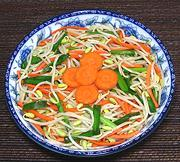

|
Pickled Bean SproutsVietnam - Dufa Gia | ||||
| Serves: Effort: Sched: DoAhead: |
4 salad ** 1-1/4 hrs Yes |
A tart, refreshing, low calorie salad for warm summer days. This one has no chili bite, unless you add some. It can be made about 8 hours ahead and refrigerated. It can also be used as the pickle layer in a Banh Mi Sandwich. | |||
|
1 3 1/3 ------ 1/3 1-1/2 1 1 ------ |
# oz c --- c t c c --- |
Bean Sprouts, mung Carrots Garlic Chives (2) -- Pickle Sugar (3) Salt Vinegar, distilled. Water --------------- |
Make - (1-1/4 hours - 10 min work (exclusive of pinching root threads -see Note-1))
|